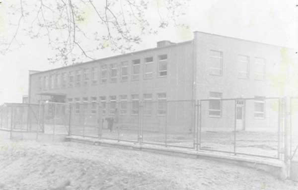
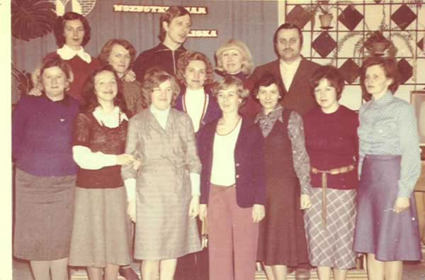
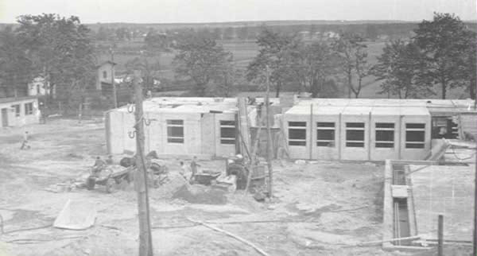
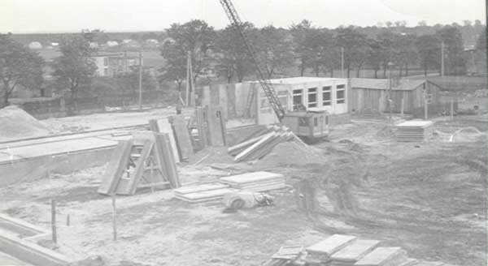
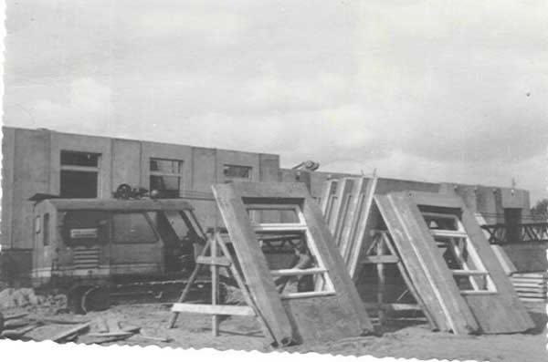

Szkoła Podstawowa nr 35 w Bydgoszczy im. Jarosława Dąbrowskiego
Szkoła Podstawowa nr 35 w Bydgoszczy im. Jarosława Dąbrowskiego
Historia
Takie były początki

Powołanie nowej Szkoły Podstawowej nr 35 w Bydgoszczy odbyło się na mocy decyzji Prezydium Miejskiej Rady Narodowej w Bydgoszczy. Uroczyste rozpoczęcie roku szkolnego miało miejsce 3 września 1962 r. w Szkole Podstawowej nr 18 przy ul. Pijarów 4. Początkowo nauka odbywała się w dwóch budynkach: w szkole nr 18 i w starej szkole przy ul. Prądy 12. Utworzono 12 oddziałów. Klasy I b, II b, III b i IV b uczyły się przy ul. Prądy, a klasy I a, II a, III a, IV a, V, VI, VII a i VII b w godzinach popołudniowych w gmachu SP 18. W 1962 r. do szkoły uczęszczało 370 uczniów. Pierwszym jej kierownikiem został mgr Tadeusz Nowicki - nauczyciel historii. Grono nauczycielskie tworzyło 12 nauczycieli:
Anna Bociek, Barbara Drzewiecka, Grażyna Dutkiewicz (Bronicka), Władysław Kurowski, Janina Głodzińska, Stefania Konowecka, Anna Psyk, Maria Goździewska, mgr Aleksandra Nowicka, Barbara Tomasik, Kazimierz Goździewski, Irena Linka.
W czasie gdy nauka odbywała się w dwóch budynkach, cały czas trwała budowa nowej szkoły przy ul. Nakielskiej 273. Kierownik szkoły Tadeusz Nowicki gromadził sprzęt szkolny i przechowywał go w przepełnionych szkołach nr 18 i 37. Uroczyste otwarcie nowego obiektu szkolnego przy ul. Nakielskiej 273 nastąpiło 9 stycznia 1963 r. o godz. 900. Od tego dnia uczniowie zaczęli uczęszczać do swojej szkoły. W założeniach szkoła w okresie letnim miała również służyć jako obiekt kolonijny.



Szkoła jest obiektem parterowym o powierzchni blisko 3000 m2 położonym na trzech poziomach gruntu. Tereny przyszkolne: plac rekreacyjny, 3 boiska sportowe, plac apelowy zajmują powierzchnię 1,6 ha.
1 IX 1999 r. przy Szkole Podstawowej nr 35 utworzono Gimnazjum nr 34, a 1 IX 2002 r. obie szkoły weszły w skład Zespołu Szkół nr 23 w Bydgoszczy.
Do 1992 r. funkcję dyrektora pełniła Grażyna Bronicka. W latach 1992 - 2005 szkołą kierował p. mgr Antoni Kupcewicz. Od 1 września 2005 r. dyrektorem szkoły została p. Aleksandra Gulbinowicz.